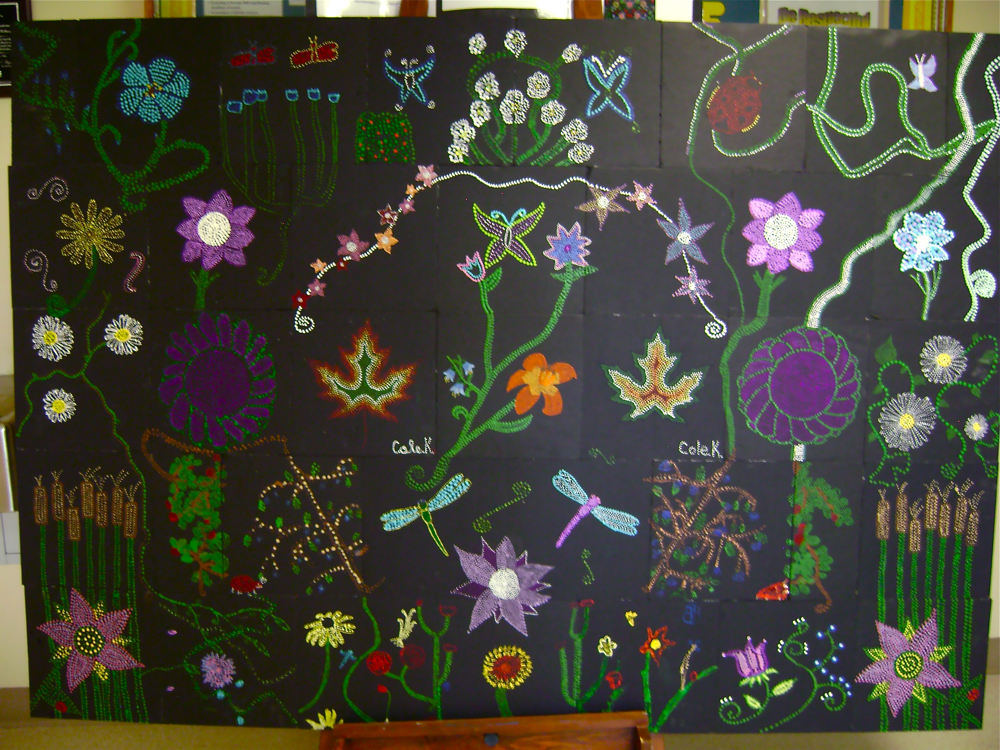

Living Histories: Bringing History Alive
Treaty Education for All
How can we make history relevant today for students? How do we address unfair perceptions and attitudes and discover truth as we build relationships between cutlures? How might we make learning more experiential and hands on for our students?
Living Sky School Division has a vision to provide “learning for all” and we want to ensure that we are meeting the needs of all students. These are projects, resources and supports for teaching Treaty Education and embedding First Nation, Métis, Inuit ways of knowing into all curriculum:
Living Histories
Authentic learning and experiential approach with guest elders/artists/cultural leaders
Living Histories Request Form (complete and email to sherron.burns@lskysd.ca)
LSKY Cultural Directory
First Nations and Métis guest artists, elders and cultural leader workshops are available for your school. Designed to enrich curriculum, treaty essential learning, and meet student needs with projects that are authentic, engaging and address many ways of learning in a differentiated classroom. Many thanks to our sponsors as facilitator fees, travel and supplies are funded by LSKY - originally through a Sask. Culture grant for Aboriginal Leadership.
| |
|
|
|
| Deanne Kasokeo & students at Major | Treaty 6 roleplay with students | Drumming & Storytelling in Unity | Joseph Naytowhow drumming |

Workshop content will be determined through planning with the teacher to meet the needs of the students. Schools are urged to speak with Living Sky School Division Learning Consultant, Sherron Burns, sherron.burns@lskysd.ca to indicate interest and to book a guest. Potential guest artists and leaders are also encouraged to contact Sherron with your information for schools.
Some projects to date:
- Storytelling and Treaty 6 teachings: Joseph Naytowhow (to many schools)
- Interviews "Danger of a single story", Journalism 20: Marcel Petit, Deanne Kasokeo, Brad Bellegarde (UCHS)
- Grass Dance and understanding regalia: Chris Scribe (Leoville)
- Attending a Powwow (Macklin, Bready)
- Thompson Highway presentation (Macklin)
- Healing Garden workshops, Allen Sapp Gallery: Daphie Pooyak and Kjelti Anderson (Leoville, BCS, McKitrick)
- Science & the Arts: grade 5 project, understanding how all living things connect through dance, story, drum, science: Joseph Naytowhow, Ashley Johnson, Kjelti Anderson, Daphe Pooyak (McKitrick)
- Drew Hayden Taylor presentation (NBCHS, Cando, Sakewew)
- Simon Moccasin, storytelling & drama (Medstead, Battleford Central)
- "First Nation and Métis Culture" Heritage Fair, Kerrobert, workshops and dance with Daphie Pooyak, Deanne Kasokeo, Joseph Naytowhow, and Tyson Wuttunnee (traditional dance with guest dancers and Wild Horse, drummers from Red Pheasant)
- Students interview with Elder, Wallace Simaginus (Cut Knife Elementary School)
- School Community Council workshops
- National Rural Congress workshop
- Cultural Fair, Simon Moccasin (Connaught)
- Chris Scribe - regalia, stories and dance (Bready)
- Tipis Rings and interview (Major)
- Buffalo and Traditional Lifestyle, teaching kit of artifacts
- Ancient Echoes Centre (Connaught)
- STF Treaty Ed Workshop, Alexis Fitch and Deanne Kasokeo
- Wanuskewin tour, (Bready)
- "Amplified Voices" Storytelling, music, drawing and technology, gr 8, Simon Moccasin, Joseph Naytowhow, Brad Bellegarde (UCHS)
- Visits with elder Fred Paskimin, Sweetgrass nation, & Sliding Hill
- Leoville students returned to the Healing Garden at the Allen Sapp Gallery to plant strawberry plants.
 |
 |
 |
|
|
Checking out healthy soil at the Healing Garden |
Daphe Pooyak shows her traditional medicines |
Talking circle around the buffalo rug |
|
|
|
|||
|
UCHS students skyping with journalist and |
Deanne Kasokeo at UCHS |
Storytelling at Hafford with Joseph Naytowhow |

|
 |
||
| Wallace Simaginus tells story of Broken Knife at CKES |
Gr. 8 students, Kerrobert create a wall mural of Sask plants, |
|
| Daphie Pooyak teaches about traditional clothing and contemporary designs in ceremonial dance (Kerrobert) |
Deanne Kasokeo tells stories about the time of signing treaties and provides new insight into history. |
 |
|
| Tyson Wutunnee and dancers prepare for Grand Entry Kerrobert Heritage Fair Powwow |
Women's Fancy dancers, Marcia Bird and Serena Baptiste Kerrobert Pwwow |
| Gr 2's join Tyson for a Sneak Up Dance Kerrobert Powwow |
Men's Fancy Dance |
|
|
|
|
Joseph Naytowhow & Sherron Burns at Sliding Hill, |
Leoville students return to Allen Sapp Art Gallery |

February 2011 Project
"Stories Re/Visioned" (visit the blog)
A TreatySmart project funded by Living Sky and the Saskatchewan Arts Board
Are respectful relationships between cultures formed when we share our stories?
Students will partner through multi-disciplinary arts to learn about treaty concepts, respect and relationships.
|
|
| Final Celebration Round Dance - 4 schools, 4 classes |
.JPG)
Project Goals
Big Idea: We are a nation comprised of many people and are called to be respectful, open and accepting of one another. In spite of our differences, we can recognize what we share in common and through our stories, celebrate what it means to be human.
- students gain insight into Treaty Essential Learning #2 “Relationships” by using visual and performance arts to reflect on their personal stories;
- students connect with and learn about someone who may be of a culture different from their own;
- students are exposed to visual and performance arts and acquire new skills;
- students examine and present their own stories.
|
|
|
| Final Celebration - dancing | Stories and masks - Spiritwood High School |
.JPG)
Partner schools for the project were:
grade 8 & 9 - Spiritwood High School and McLurg High School (Wilkie)
grade 5 &6 - Hartley Clark Elementary (Spiritwood) and Norman Carter Elementary (Wilkie)
Guest Artists for the project were:
- Joseph Naytowhow, storyteller
- Douglas Witt, mask maker
- Ashley Johnson, dancer
- Andrea Menard, guest speaker at the final celebration
|
|
|
| Joseph Naytowhow, telling stories at Norman Carter School | Artist Trading card - getting to know each other |
Do you have an idea for a special project? You can contact the Learning Consultants at Living Sky School Division to discuss your idea and to explore ways to bring it to life in the classroom.